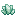

Changelog
1.5.0
Adding 8 new artefacts:
Adding 3 advancements:
Changing 18 artefacts:
-
Cat Ears: Changing its looting type in Village Tanneries to an added pool.
-

Crystal of Origin: Changing its item id.
-
 Piglin Armor: Changing its durability to match the Netherite Armor.
Piglin Armor: Changing its durability to match the Netherite Armor.
-
Piglin Armor: Removing it from chests and making it accessible through upgrading instead.
-
Repair Crystal: Changing its item id.
-
Sniffer Armor: Changing its durability to match the Netherite Armor.
-
Sniffer Armor: Removing it from Suspicious Gravel and making it accessible through upgrading instead.
-
Uncommon Music Discs: Changing their looting type in Jungle Temples to an added pool.
-
Warden Armor: Changing its durability to match the Netherite Armor.
-
Warden Armor: Removing it from chests and making it accessible through upgrading instead.
Other changes:
-
Increasing the duration of all jukebox songs by 1.0 second.
-
Upgrading the pack to Minecraft 1.21.7.
1.4.0
Adding 8 new artefacts:
Adding 1 advancement:
Changing 2 artefacts:
1.3.0
Adding 6 new artefacts:
Adding 3 advancements:
Changing 9 artefacts:
Other changes:
-
Adding translations for Français (France).
-
Changing how artefacts are looted in Bastions and Woodland Mansions to be more generous with the player.
1.2.0
Adding 9 new artefacts:
Adding 7 advancements:
Changing 5 artefacts:
Other changes:
-
Adding compatibility with the Music Notification mod.
-
Using the item_name component instead of the set_name function for the artefacts.
1.1.0
Adding 7 new artefacts:
Changing 7 artefacts:
1.0.0
Adding 17 artefacts: